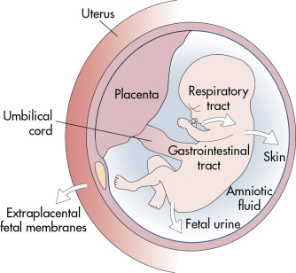
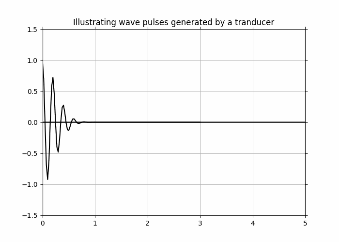
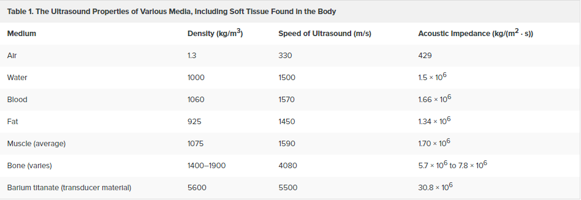
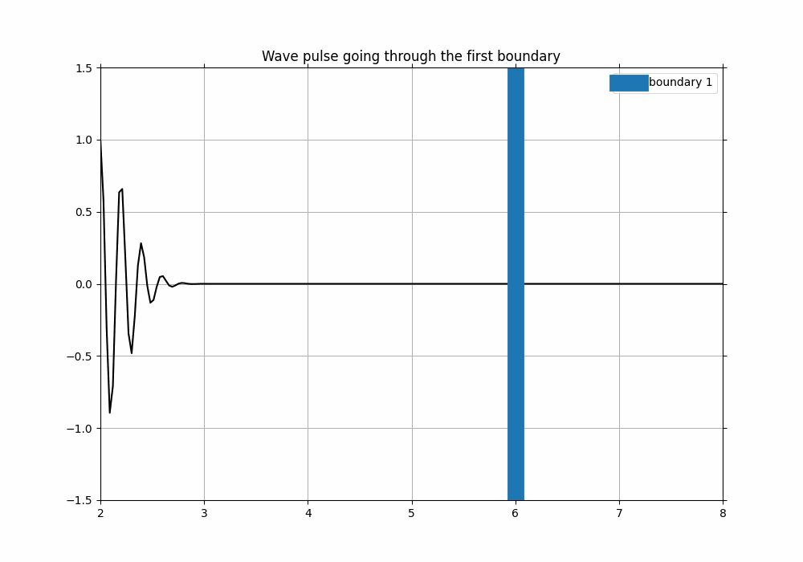
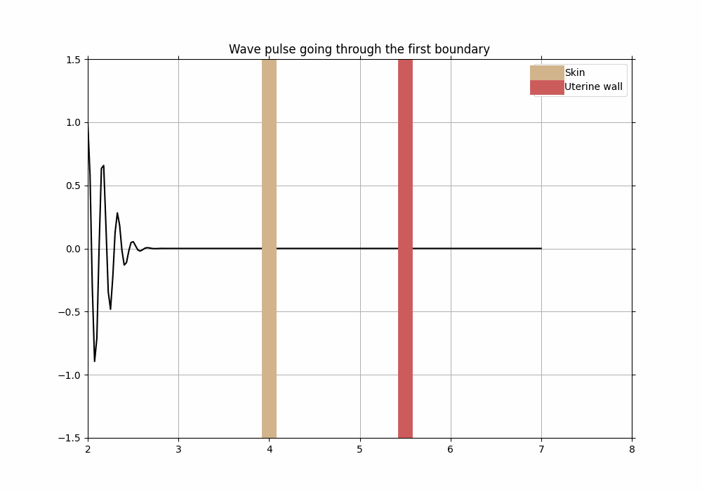

Impedance¶
Learning objectives:¶
Explain what acoustic impedance is in terms of density and speed of medium
Explore reflection and transmission coefficients physically and mathematically (using visualisation and the slider); what they do to a travelling wave; thinking about energies of waves in terms of reflection and transmission
Compare impedance and refractive index (drawing a parallel between these two)
Differentiating between materials with different impedance values, and what those differences imply for reflection and transmission of waves
Relating concepts of wave propagation, reflection and depth of interface
Expressing signals sent by the ultrasound device as wave packets with known attributes (i.e frequency)
Visualising movement of the wave packet with one and two boundaries
Linking known concepts of speed, distance and time to propagation of waves through media to grasp how ultrasound images are formed
What is impedance?¶
Explaining characteristic acoustic impedance¶
The acoustic impedance (Z) of a medium is dependent on the density of medium \(\left(\rho \left[\frac{kg}{m^3}\right]\right)\) and the speed of sound through this medium \(\left(c \left[\frac{m}{s}\right]\right)\) , given as
As we can see, it is a material property, which simply describes how a sound wave behaves when passing through a specific medium. So, impedance of a material describes its resistance to oscillations.
When waves are propagating through media with difference impedance, a fraction of those waves is either transmitted or reflected. The difference in impedance is what helps us identify how much of the wave is trasmitted or reflected. We will explore what it means more visually in other sections.
Reflection and transmission of waves¶
All waves can get reflected when meeting a boundary, and different things affect how the wave behaves once it has encountered the boundary. For now, we are interested in seeing how the difference between impedance values affect the reflected and transmitted waves.
We will not focus too much on the derivation of the following expressions, however, especially interested can have a look at this .pdf file [*] as well as the following lectures from UiO’s class in Waves and Oscillations [**].
In order to get a better understanding of impedance, we can define two boundaries: \(Z_a\) and \(Z_b\). We will use these to define the impedances of the first boundary, where our wave will be coming from (\(Z_a\)), and \(Z_b\) as the impedance of the second boundary, where our wave is travelling to. We know that our wave has an amplitude that it is travelling with - let us denote it as \(A_i\) (for incoming amplitude). We also know that our wave will either get reflected or transmitted - and we can denote those amplitudes as \(A_r\) and \(A_t\) respectively. The reason why we are interested in defining these amplitudes is because amplitudes are directly related to the energy transported by the wave (recall that intensity is proportional with square of amplitude, \(I \propto A^2 \), and intensity is simply energy per unit area per unit time). Using this information, we can define
which we call the reflection coefficient \(R\), that gives us the fraction of the wave that gets reflected. Furthermore, it is also given as
which shows us how the reflection coefficient \(R\) is related to the impedances of the boundaries that our wave is travelling through.
We can extend this idea to find the transmission coefficient \(T\), which gives us the fraction of the wave that gets transmitted:
In order to understand how we came about these derivations, we need to consider conservation of energy and apply it to amplitudes of the wave (incoming, reflected and transmitted). To make this easier to understand, we can represent the same coefficients using electromagnetic (EM) waves, where we denote the amplitude of the incoming EM wave as \(E_i\), amplitude of the reflected wave as \(E_r\) and transmitted as \(E_t\). We can also use the well known refractive indices of different media denoted as \(n_1\) and \(n_2\) that are analagous to \(Z_a\) and \(Z_b\). Thus, we arrive at very similar equations relating amplitudes of the incoming, reflected and transmitted EM wave and refractive indices of media that it propagates through:
where \(r\) is the reflection coefficient for EM waves (analagous to \(R\) for impedance) and
where \(t\) is the transmission coefficient analagous to \(T\).
Thus, we are able to connect the concept of impedance to concept of refractive index and how waves (regardless of their type) behave when they propagate from one media to another.
Now that we have mathematical expressions ready, we can try to visualise exactly how impedance affects the behaviour of a wave.
this is where my animation is going to be java script temp¶
Hopefully, you were able to move the sliders to change the impedance of the boundaries to see how the wave behaves. Let us now apply our knowledge to understand the application of theory that we have just gone through.
Impedance in ultrasound¶
Ultrasound imaging is a widely used practice in medical diagnostics which relies on propagation of sound waves through different tissue. The term “ultrasound” stems from the fact that the sound waves sent through tissue have a frequency ranging between 2.5 and 10 MHz, which is beyond the audible spectrum for humans [1]. The waves that are firstly sent through tissue go through series of reflection and transmission, and are then picked up again to create an imagine of the organ that is of interest.
Ultrasound imaging and prenatal care¶
Let us now apply everything that we have learnt so far to understand how ultrasound imaging is used in prenatal care. When an ultrasound pulse travels through the body on its way to the fetus, it has to propagate through multiple surfaces, which have different impedance values. For example, once the sound has travelled through skin (its very first barrier), it will be travelling towards the uterine wall. Once it hits the uterine wall, the signal will keep propagating through the amniotic fluid (fluid surrounding the fetus inside of the uterus), potentially also the placenta, and finally, end up reaching the fetus. But how exactly do we end up getting a clear image of the foster without it being ruined by reflections between the uterine wall and the amniotic fluid? This is an interesting problem since we know that we will be getting as much reflection between the uterine wall and amniotic fluid as we would from the amniotic fluid and the fetus. But why exactly does this not interfere with the image that we get at the end of the procedure?
In order to answer this question, we will need to understand how the signal behaves when it has to go through multiple barriers, such as with uterine wall, amniotic fluid and the fetus. We will exclude the placenta for now to simplify the situation, and will only focus on three boundaries with those being the uterine wall, amniotic fluid and fetus itself.
Earlier we had only considered the situation involving two barries with two different impedance values - but this is too simple and is not the only case that we get inside of a human body. In order to understand this better, let us visualise the realistic situation including all of the boundaries that we are interested in [2]:

As we can see in the figure above, there are indeed at least four major boundaries that the wave pulse has to penetrate through. Modern ultrasound technology also allows us to look through the fetus and observe its internal organs, but we will be focusing on the most simple example which would simply involve understanding how we are able to obtain the ultrasound imaging without any specific details.
Let us now send a wave pulse through the body and into the uterus to propagate through. A wave pulse that we are sending is a sum of either sine or cosine waves summed together. The pulse itself has one specific frequency within the ultrasound range (can you recall what it was?). The wave pulse is sent through the body using a tranducer, which generates the ultrasound signal.
Let us visualise this wave pulse first:
%matplotlib widget
import numpy as np
import matplotlib.pyplot as plt
from scipy import signal
from matplotlib.animation import FuncAnimation, PillowWriter
from matplotlib.widgets import Button
fig, ax = plt.subplots(figsize=(7, 5))#creating canvas
x_fixed = np.linspace(0, 5, 200) #creating fixed axis: 1 pulse
x_fixed2 = np.linspace(0, 5, 200) - 2 #creating fixed axis that are shifted to the left for 2 pulse
#started = False #for our button
def animate(i):
ax.cla()
x = np.linspace(0, 5, 200) - i/20 #translating our axis with a certain increment
x2 = np.linspace(0, 5, 200) - i/20
#updating the pulse with respect to the new, shifted axis! (first pulse)
F = signal.gausspulse(x, fc = 5, bw = 0.3, retquad = False, retenv = True)[0]
#creating the second signal
F2 = signal.gausspulse(x2, fc = 5, bw = 0.3, retquad = False, retenv = True)[0]
ax.plot(x_fixed, F, color = 'k') #plotting with respect to the fixed axis
#ax.plot(x_fixed, P, color = 'r')
ax.plot(x_fixed2, F2, color = 'k')
#ax.plot(x_fixed2, P2, color = 'r')
ax.set_title("Illustrating wave pulses generated by a tranducer")
ax.set(xlim = (0, 5), ylim = (-1.5, 1.5))
ax.grid()
#creating if statement to pause animation until the button is clicked
#if started == False:
#anim.pause()
#defining an event which would start the animation when button is activated/clicked on
"""
def startAnimation(event):
global started
started = True
anim.resume()
"""
# axes parameters: left, bottom, width, height
"""
placement = plt.axes([0.775, 0.01, 0.125, 0.050])
resumeButton = Button(placement, "Start", color='r', hovercolor='0.975')
resumeButton.on_clicked(startAnimation)
"""
anim = FuncAnimation(fig, animate, interval=90, frames=85, blit = False, repeat = False)
writer = PillowWriter(fps=5)
#anim.save("demo_wavepulse.gif", writer=writer)
#plt.show()

This is what the pulses could potentially look like. One of those pulses is usually comprised of 2-3 sine or cosine cycle of the same frequency. The length of each pulse tells us about the distance that it travels (more about this later). The time between two pulses (as seen above) is used by the tranducer to wait for the pulse to come back after being reflected off from the body. This time is crucial for ultrasound imaging - more of which we will discuss later on [3].
We have chosen an arbitrary frequency here to simply show the shape of the pulse and how it would be propagating with time along the x-axis and its amplitude along the y-axis. We can also try and add the barriers from the figure above [2] with their respective impedance values.
Before we do so, we might need think of what will happen to the wave pulse conceptually, while applying our existing knowledge about impedance, reflection, transmission and behaviour of waves.
Ultrasound properties of media¶
Let us firstly have a look at different impedance values and understand what they mean [4]:

As we can see, the acoustic impedance is given in terms of a decimal number, which makes it easier to compare the different values. Straight away we can notice how great the difference between acoustic impedance of air and for example water is - this indicates a greater reflection coefficient and a smaller transmission coefficient (can you recall the formulas for \(R\) and \(T\) to see how this makes sense?).
Another important feature to mention here is that the acoustic impedance of soft tissue varies very little compared to for example, the acoustic impedance of air and bone.
An important feature of ultrasound imaging that we have to understand is what happens to the wave pulse as it travels along the body. As we have established before, the frequency of the pulse is constant, and is chosen before the pulse is sent through the body. In order to extract information about the different organs or other biological tissues that we are interested in, we need to relate physical properties of the wavepulse with physical properties of the body. The physical properties of the body that we are aware of are the impedance values, which, as we can see from the figure above, are quite close in value. One approximation that is made in ultrasound imaging is assuming that the speed of sound is relatively constant throughout the human body (speed of sound through biological tissue is ~1540 m/s, quite close to speed of sound in water, ~1500 m/s).
In order to understand exactly how we are able to extract information from ultrasound, let us recall the following relationship between frequency, wavelength and speed of the wave:
where \(f\) is the frequency of the wave, \(c\) is the speed and \(\lambda\) is the wavelength.
Since we have established that both \(f\) and \(c\) are more or less constant throughout the propagation of the wave pulse, could we somehow use it to extract the neccesary information needed for us to construct the ultrasound images?
Guiding questions - thinking about the wave pulse and linking it to impedance¶
1. Think about the formula connecting wavelength, frequency and speed of the wave. Which other physical property can you relate the wavelength to? Hint: think about its units.
Solution to question 1
Distance! The units are the same, and wavelength can be thought of how much the wave propagates to in terms of distance per cycle.
2. Now that you have established the link between wavelength and distance, think about distance and propagation of waves. What will change if the same wave (with same frequency and speed) is propagating through two different distances? Hint: think about this in terms of classical mechanics: recall the relationship between distance, speed and time.
Solution to question 2
Same wave will propagate through different distances with different times, so the greater the distance, the longer it takes for the wave to return to its initial position.
3. Recall what we have discussed about impedance difference and the different acousic impedance values from Table 1. Why is an ultrasound gel used between the transductor and skin during the procedure? Hint: think about \(R\) and \(T\).
Solution to question 3
Greater impedance difference means less transmission and more reflection. We use gel to decrease the difference in impedance between air and skin so that most of the pulse goes through the skin.
4. What would be the result if acoustic impedance of different tissues within our bodies had very different values? Would we be able to get the same sort of images as we do today?
Solution to question 4
No, since the impedance difference would be too great and there would be more reflection than transmission and we would not be able to see deeper into the human body.
We are now familiar with some of the key facts that are being used in ultrasound imaging to retrieve images. We can now use this to implement more boundaries in order to see what the reflected and transmitted pulses would look like.
Propagation through the human body¶
%matplotlib widget
import numpy as np
import matplotlib.pyplot as plt
from scipy import signal
from matplotlib.animation import FuncAnimation, PillowWriter
from matplotlib.widgets import Button
fig, ax = plt.subplots(figsize=(10, 7)) #creating canvas
x_fixed = np.linspace(2, 8, 200) #creating fixed axis
x_fix = np.linspace(2, 10, 200) #creating fixed axis for reflected wave
x_reversed = x_fix[::-1] #reversing axis to plot the wave moving backwards
#started = False #for our button
def animate(i):
ax.cla()
x = np.linspace(0, 6, 200) - i/10 #translating our axis with a certain increment
x_back = np.linspace(0, 6, 200) - i/10 #creating same linspace for the reflected wave, technically not really needed atm
#updating the pulse with respect to the new, shifted axis! (first pulse)
F = signal.gausspulse(x, fc = 5, bw = 0.3, retquad = False, retenv = True)[0]
#creating the signal after passing through the boundary (transmitted wave)
F_small = signal.gausspulse(x, fc = 5, bw = 0.3, retquad = False, retenv = True)[0] * 0.8
#creating the signal after passing through the boundary (reflected wave)
F_back = signal.gausspulse(x_back, fc = 5, bw = 0.3, retquad = False, retenv = True)[0] * 0.2
#updating the animation: original wave pulse moves to the right until frame 39
if i < 39:
ax.plot(x_fixed, F, color = 'k') #plotting with respect to the fixed axis
#updating animation so that the transmitted and reflected waves are plotted right after passing through boundary!
else:
ax.plot(x_fixed, F_small, color = 'k')
ax.plot(x_reversed, F_back, color = 'k')
ax.axvline(6, linewidth = 15, label = "boundary 1") #vertical line for boundary
ax.set_title("Wave pulse going through the first boundary")
ax.legend()
ax.set(xlim = (2, 8), ylim = (-1.5, 1.5))
ax.grid()
#creating if statement to pause animation until the button is clicked
#if started == False:
#anim.pause()
#defining an event which would start the animation when button is activated/clicked on
"""
def startAnimation(event):
global started
started = True
anim.resume()
"""
# axes parameters: left, bottom, width, height
"""
placement = plt.axes([0.775, 0.01, 0.125, 0.050])
resumeButton = Button(placement, "Start", color='r', hovercolor='0.975')
resumeButton.on_clicked(startAnimation)
"""
anim = FuncAnimation(fig, animate, interval=100, frames=68, blit = False, repeat = False)
writer = PillowWriter(fps=5)
#anim.save("demo_oneboundary.gif", writer=writer)
#plt.show()

Now that we know how our wave packet would act with one boundary with a certain arbitrary impedance, we can implement more barriers such as skin and uterine wall to observe its behaviour.
%matplotlib widget
import numpy as np
import matplotlib.pyplot as plt
from scipy import signal
from matplotlib.animation import FuncAnimation, PillowWriter
from matplotlib.widgets import Button
fig, ax = plt.subplots(figsize=(10, 7)) #creating canvas
x_fixed = np.linspace(2, 7, 200) #creating fixed axis
#creating axis for reflected from skin wave pulse
x_fixS = np.linspace(0, 5, 200)
x_reversedS = x_fixS[::-1] #reversing to plot reflected wave pulse backwards
#creating axis for reflected from uterus wave pulse
x_fixU = x_fixS + 2.2 #shifting the axis to make sure the wave pulses do not collide
x_reversedU = x_fixU[::-1]
x_U_F = x_fixU + 0.6
#for our button
#started = False
def animate(i):
ax.cla()
#creating dynamic axis for propagation of the pulse
x = np.linspace(0, 6, 200) - i/10 #translating our axis with a certain increment
x_backS = np.linspace(0, 6, 200) - i/10 #translating our axis for reflected wave pulse from skin
x_backU = np.linspace(2, 6, 200) - i/10 #translating our axis for reflected wave pulse from uterus
#creating the signal that we will be sending through skin
#updating the pulse with respect to the new, shifted axis! (first pulse)
F = signal.gausspulse(x, fc = 5, bw = 0.3, retquad = False, retenv = True)[0]
#signal reflected from the skin
F_skin_back = signal.gausspulse(x_backS, fc = 5, bw = 0.3, retquad = False, retenv = True)[0] * 0.2
#transmitted signal through skin to uterus
F_U = 0.8*F #setting amplitude sizes
#reflected back from the uterus to transducer
F_U_back = signal.gausspulse(x_backU, fc = 5, bw = 0.3, retquad = False, retenv = True)[0] * 0.24
F_U_forward = 0.6*F
#updating the animation - using same method as in code above (for one boundary)
if i < 22:
ax.plot(x_fixed, F, color = 'k') #plotting with respect to the fixed axis
elif(i >= 22) and (i <= 37):
ax.plot(x_reversedS, F_skin_back, color = 'k')
ax.plot(x_fixU, F_U, color = 'k') #keeps propagating through uterus
elif(i >= 37) and (i <= 80):
ax.plot(x_reversedU, F_U_back, color = 'k') #reflected from uterus back to the transducer
ax.plot(x_U_F, F_U_forward, color = 'k') #keeps moving forward from the uterus to the fetus
#creating boundaries
ax.axvline(4, linewidth = 15, label = "Skin", color = 'tan')
ax.axvline(5.5, linewidth = 15, label = "Uterine wall", color = 'indianred')
ax.set_title("Wave pulse going through the first boundary")
ax.legend()
ax.set(xlim = (2, 8), ylim = (-1.5, 1.5))
ax.grid()
#if started == False:
#anim.pause()
#defining an event which would start the animation when button is activated/clicked on
"""
def startAnimation(event):
global started
started = True
anim.resume()
"""
#creating the button for starting the animation
# axes parameters: left, bottom, width, height
"""
placement = plt.axes([0.775, 0.01, 0.125, 0.050])
resumeButton = Button(placement, "Start", color='r', hovercolor='0.975')
resumeButton.on_clicked(startAnimation)
"""
anim = FuncAnimation(fig, animate, interval=100, frames=80, blit = False, repeat = False)
writer = PillowWriter(fps=5)
#anim.save("demo_twoboundaries.gif", writer=writer)
#plt.show()

As you were hopefully able to see from the animation above, most of the initial wave packet was able to propagate through the skin and into the uterine wall without being reflected too much - in order to achieve that, ultrasound technicians use a special gel which has impedance value close to that of skin (recall question 3). That way, most of the way is able to propagate through further into the uterine wall and at the end, all the way to the fetus.
Since the waves move to different depths, it must mean that they arrive back to the source (transducter) at different times. We see that illustrated when we observe the reflected fraction of the wave pulse coming back to initial position. We also recall the fact that the wave pulses are being sent after each other with a specific time frame - this time frame is used to wait for the previous reflected wave pulse to return back to the transducer.
From the animations above, you were hopefully able to witness that yourself. We did not illustrate the behaviour of the wave packet as it moves deeper into the body, but since we know that the impedance difference betweem those different tissues is so similar, roughly the same amnount of waves will be reflected back to the trasducer from each boundary. We have also simplified the animation and did not illustrate how the reflected waves would get affected by the skin and uterine wall boundaries on their way back to the tranducer - in theory, they would have lost some energy and their amplitudes would have decreased a little bit as well.
Now think back to quiding question 2 - can you understand why the reflected waves coming back from the uterine wall and other boundaries will not ruin the image that we get at the end of the ultrasound session? Can you see how the distance travelled by these wave pulses affects the time taken for them to return back to the transducer?
The answers to the question above lies in the fact that wave pulses travel different distances on their way from the transducer down to the fetus - and even though each wave pulse gets reflected equally from each boundary, they do not interfere with each other on their way back to the transducer as they arrive there at different times. This time is crucial to us - it is being used to calculate how far down the pulse travelled (recall the speed, distance and time relationship), which is then used to create a more dimensional image which shows the depth of each boundary that is being examined. This is possible, as we recall, since we assume the speed of sound to be roughly the same though most tissues in the body (excluding some, such as bones for example).
Potential Computational Essay ideas¶
Some of the things that we have not discussed here is attenuation - we have explained how the amplitude of ultrasound wave pulses passing through tissue changes in terms of impedance differences, however, there are other factors that affect it. Attenuation refers to phenomenon that describes how intensity and amplitude of those waves (or wave pulses) changes, while also considering scattering and absorption. For example, one could look into the relationship between absorption of different tissues and attenuation coefficient - and compare the transmitted pulse to the original pulse after this absorption. Read more about it here [5]!
Another aspect of ultrasound that we have not discussed is the tranducer and how it sends the wave pulses into the body. For example, we have not really discussed the resolution of those pulses, and what affects that. One of the things that can be explored is the width of the transducer and its relation to the resolution of those wave pulses once sent and received back from the body, specifically in terms of the wave pulses’ frequency. Get inspired by reading more about it here [6]!
References and further readings¶
* https://scholar.harvard.edu/files/schwartz/files/lecture9-impedance.pdf
*** https://wiki.seg.org/wiki/Reflection_coefficients_and_transmission_coefficients (explains the difference in signs for \(R\) for pressure waves vs particle velocity waves)
[1] https://thoracickey.com/physical-principles-of-ultrasound-and-generation-of-images/
[2] https://radiologykey.com/amniotic-fluid-and-fetal-membranes/
[3] https://courses.lumenlearning.com/physics/chapter/17-7-ultrasound/
[4] https://www.utmb.edu/pedi_ed/adapt/LOs/Regional Anesthesia Rotation- original/page_10.htm